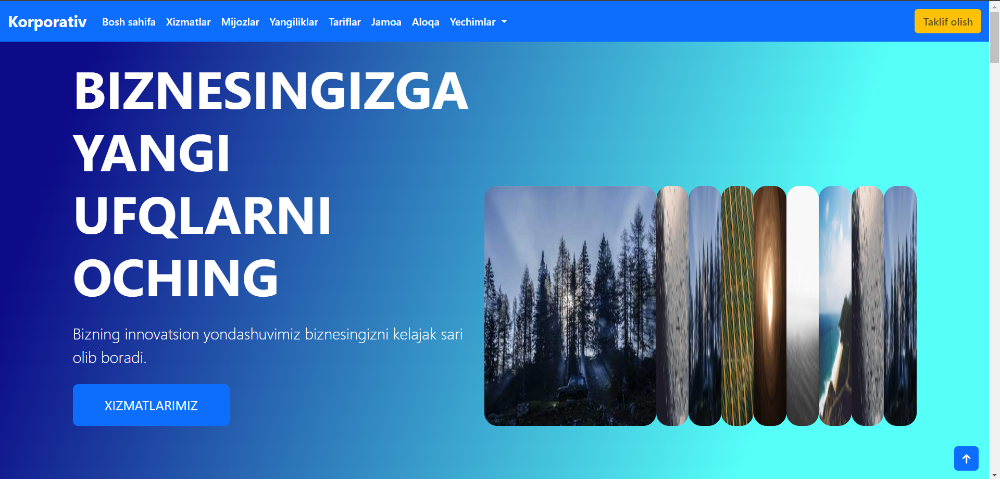
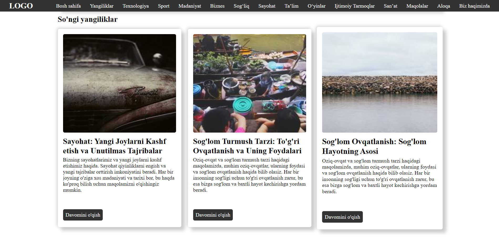

Loyihalarim

Ilg'or Korporativ Veb-Sayt
Bootstrap 5 da ajoyib chiroyli Korporativ sahifa yaratdim. Kirib ko'rishingiz mumkin.

Responsive Blog Site
SCSS yordamida zamonaviy va moslashuvchan web sahifa oson va samarali tarzda yaratildi. Flexbox, Grid layout, media queries va animatsiyalar qo'llanilib, turli qurilmalarda yaxshi ishlaydigan dizayn yaratildi.